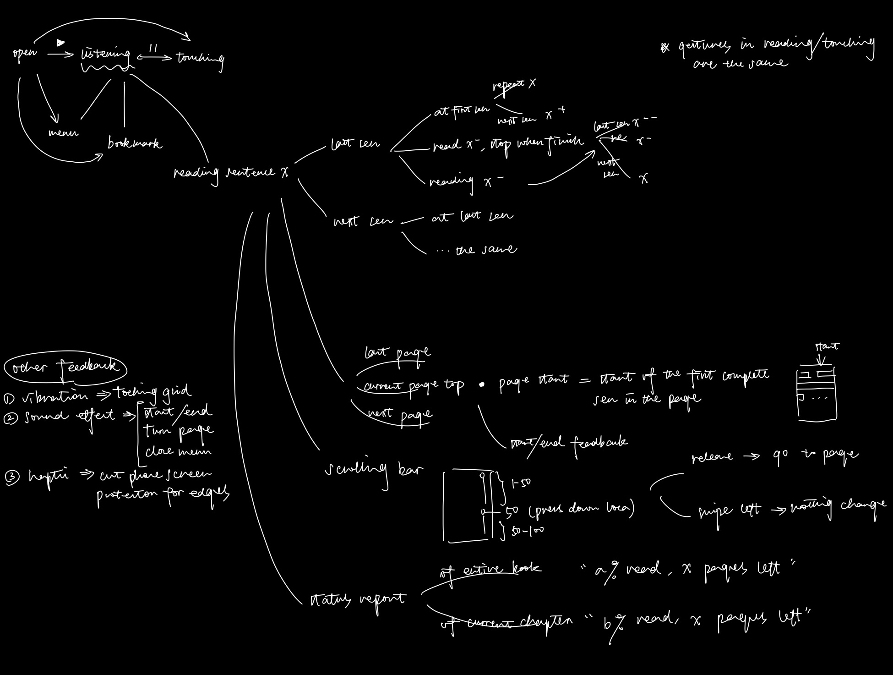

An interactive reader APP designed for visually impaired people.
Reading is an important way through which visually impaired (VI) people can obtain knowledge. Many have learned to read braille books or refreshable braille displays at schools. Furthermore with the development of accessible technologies on mobile devices, VI people have gradually adapted to using screen readers to read text from laptops and phones. Yet existing text readers are extremely limited - braille books are heavy and perishable, refreshable braille displays are expensive and not yet well developed, and most mobile text readers are inflexible thus have poor performance in helping with advanced learning (academic reading). As a result VI people are facing inefficiencies in interaction, such as difficulties in skimming, revisiting, and labelling. This project focuses on research, design, and evaluation on ways to revisit certain parts of the text, a theme which has been poorly researched by existing literatures.
The difficulties about revisiting contents while touch reading text is that touch screen transforms braille books’ haptic feedback into auditory feedback which is linear. However efficient revisit needs non-linear clues. In order to come up with better designs we did user research to understand the current status and problems of VI people using mobile devices. Based on the semi structured interviews we concluded some design guidelines and developed prototypes based on that.
Currently we focus on reading Chinese texts as we are working and testing with Chinese VI people. In the touch reaching mode to avoid a feeling of disconnectedness brought by touch reading single Chinese characters, we group the text into words of 2-6 words. Below is a mindmap of gestures of different functionalities and leading to different modes (listening and touching).
